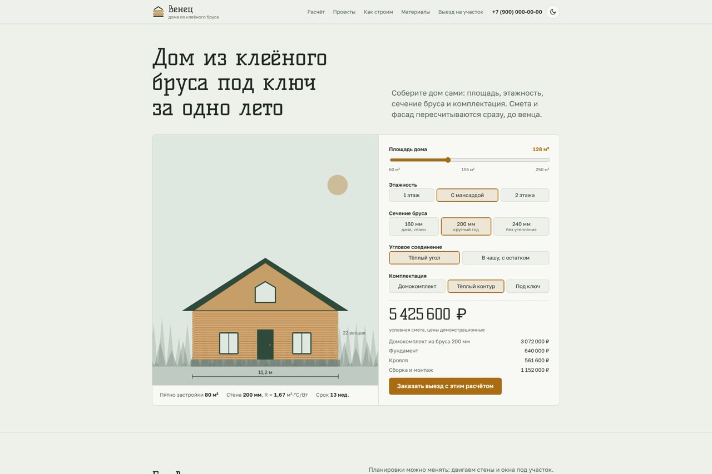
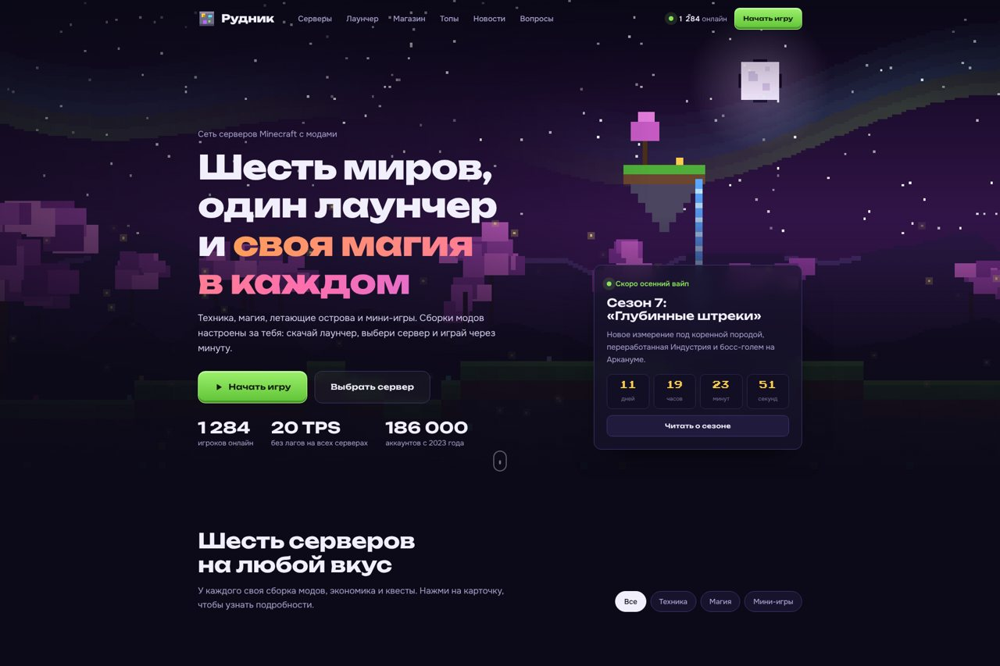

Демо-сайты
Два сайта с интерактивом, адаптивом под телефоны и тёмной темой. Без фреймворков: один HTML-файл, шрифты встроены. Компании и сервер вымышленные.

«Венец»: строительная компания
Калькулятор дома: площадь, этажность, брус и комплектация. Смета и фасад пересчитываются сразу. Проекты с планировками, сравнение материалов, запись на выезд.
Открыть сайт
«Рудник»: сеть Minecraft-серверов
Живой пиксельный пейзаж, шесть серверов, макет лаунчера с загрузкой модов, магазин привилегий, топы и новости. Анимации на каждой кнопке.
Открыть сайт